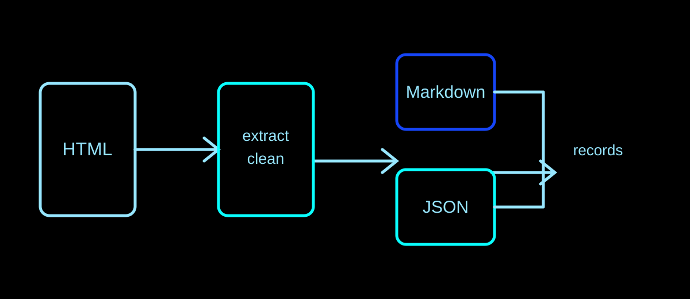

Web data
Crawl4AI: An LLM-Ready Web Crawler for Research Pipelines
Crawl4AI is an open-source crawler and scraper aimed at converting web pages into cleaner Markdown and structured outputs for agent, RAG, and data-pipeline work. Cleaning a page helps; it does not make its claims true.
Published

Quick definition
Crawl4AI is an LLM-oriented web-crawling project. Its documentation describes page crawling, Markdown-oriented output, structured extraction, browser interaction, and related pipeline features for websites that agents or retrieval systems need to process.
Why clean output matters
Raw HTML contains navigation, interface text, repeated components, and layout markup that can bury the main document. A cleaner representation makes downstream retrieval easier to inspect and cheaper to pass to a model. But Markdown is a format change, not a fact-check. Tables, captions, dynamically loaded sections, and source context can still be lost or distorted.
A small evaluation plan
Pick a legal, public set of pages with known answers. Compare source HTML, extracted Markdown, and the final structured record. Check whether headings, links, dates, tables, code blocks, and figures survive. Track duplicate text and missing sections before placing the output in a knowledge base.
Limits
Robots directives, rate limits, permissions, paywalls, and terms still apply. Extraction quality will vary with page structure. Sending collected material to a cloud service also changes the privacy and cost profile of a workflow.